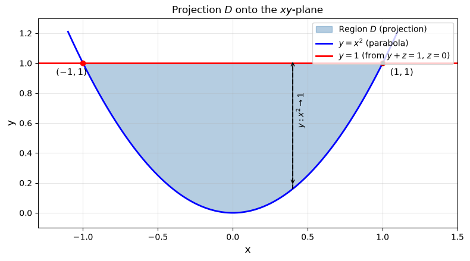
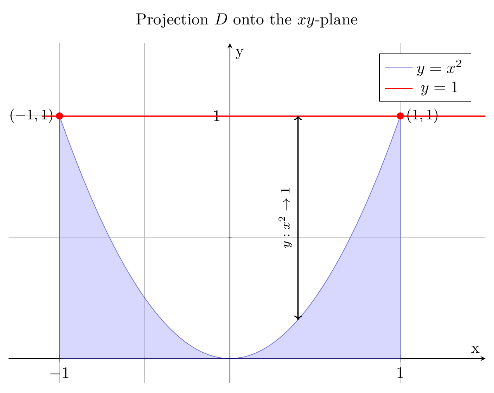
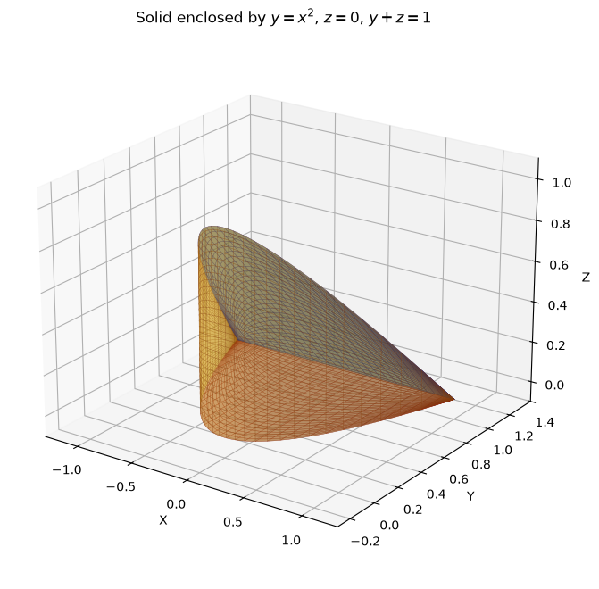
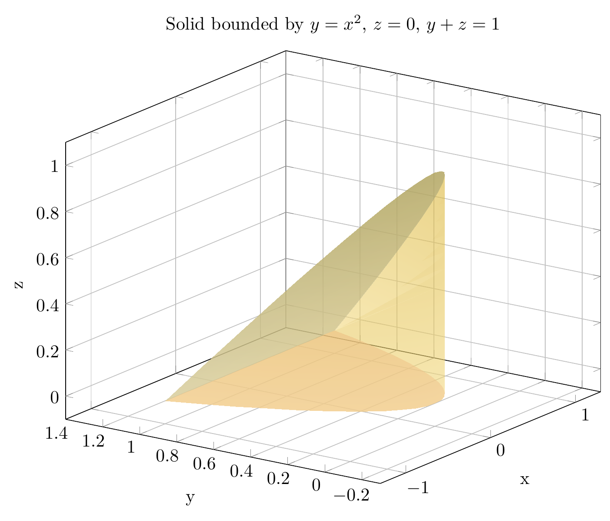

Please solve the problem in the following image.
(Image `20260929_020845_333164_utc_0800_0.png`. Alt text: Image: human_20260929_020845_333164_utc_0800)
20260929_020845_333164_utc_0800_0.png
End of problem
Answer
## Setting Up the Region
The solid $E$ is enclosed by three surfaces:
- **Parabolic cylinder** $y = x^2$ (which bounds $E$ on one side)
- **Plane** $z = 0$ (the floor)
- **Plane** $y + z = 1$, equivalently $z = 1 - y$ (the slanted ceiling)
The parabolic cylinder $y = x^2$ opens upward in the $y$-direction, so $E$ lies in the region $y \ge x^2$. Above each point, $z$ runs from $z = 0$ up to $z = 1 - y$, which requires $y \le 1$.
## Finding the Projection
Projecting $E$ onto the $xy$-plane gives the region
$$
D = \{(x,y) : -1 \le x \le 1,\; x^2 \le y \le 1\}.
$$
The top boundary $y=1$ comes from the line where $z=0$ meets $y+z=1$. The two parabola-vertices $x^2 = y = 1$ give $x = \pm 1$.

pyplot_0.png

pgfplots_0.png
## Setting Up the Triple Integral
Using the order $dz\,dy\,dx$:
$$
V = \int_{-1}^{1} \int_{x^2}^{1} \int_{0}^{\,1-y} dz\, dy\, dx.
$$
## Evaluating the Integral
**Innermost ($z$):**
$$
\int_0^{1-y} dz = 1 - y.
$$
**Middle ($y$):**
$$
\int_{x^2}^{1}(1-y)\,dy = \left[y - \frac{y^2}{2}\right]_{x^2}^{1}
= \frac{1}{2} - x^2 + \frac{x^4}{2}.
$$
**Outer ($x$):** using the even symmetry of the integrand,
$$
V = 2\int_0^1 \left(\frac{1}{2} - x^2 + \frac{x^4}{2}\right) dx
= 2\left[\frac{x}{2} - \frac{x^3}{3} + \frac{x^5}{10}\right]_0^1
= 2\left(\frac{1}{2} - \frac{1}{3} + \frac{1}{10}\right)
= 2 \cdot \frac{8}{30}.
$$
$$
\boxed{\,V = \dfrac{8}{15}\,}
$$
## Visualizing the Solid

pyplot_1.png

pgfplots_1.png
The blue (top) surface is $z = 1 - y$, the red (bottom) is $z = 0$, and the gold (side wall) is the parabolic cylinder $y = x^2$. The slanted ceiling meets the floor along the curve $y = 1$, $z = 0$ — the top edge of the projection $D$.
## Sanity Check via Sympy
The symbolic computation confirms: